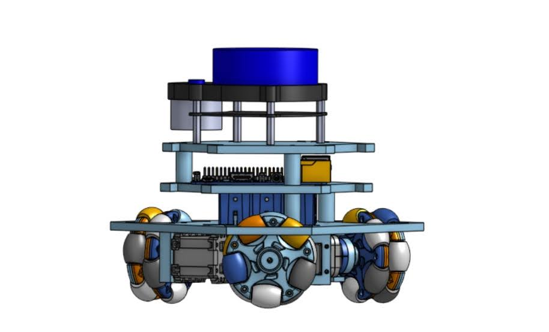
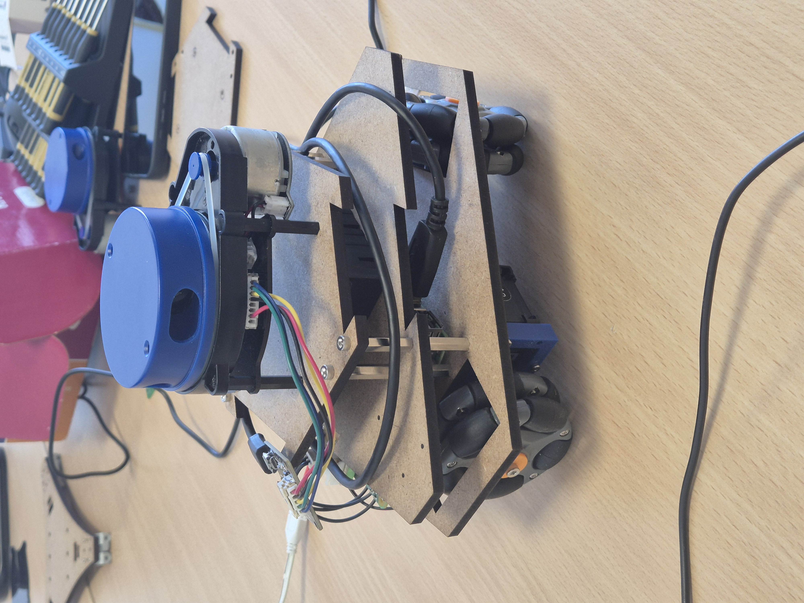

Robot Holonome Autonome
Conception et développement d'un système intelligent.
Projet réalisé dans le cadre du Diplôme Universitaire de Robotique, en équipe de 4 étudiants, avec pour objectif de créer un robot capable de sortir d'un labyrinthe inconu, en utilisant un capteur LIDAR pour la détection d'obtacles et des Servomoteurs pour commander les roues précisément.

Conception Mécanique
Ce projet repose sur la conception et l'assemblage 3D du robot. Les roues holonomes lui permetent de se déplacer dans n'importe quelle direction sur un plan en 2D, sans avoir besoin de pivoter.
Cette particularité offre une manœuvrabilité exceptionnelle, idéale pour notre objectif et la navigation dans des espaces restreints.
Le chasis à été réalisé en découpe laser sur des plaques de 3mm. La modélisation 3D a été réalisée sur OnShape, similaire à SolidWorks.

Architecture électronique
Le traitement principal du robot est assuré par une Raspberry Pi 3. Elle agit comme le cerveau du système, traitant les données du lidar en temps réel.
Pour la perception de son environnement, le robot est équipé d'un scanner Lidar à 360 degrés. Ce capteur laser mesure des distances avec précision sur 360 points.
Le déplacement du robot se fait à l'aide des roues holonomes et des servomoteurs Dynamixel MX-12W permettant le déplacement rapide et précis du robot.
Pour l'alimentation, le robot utilise 3 accumulateurs LI-ion de 3000mAh chacun couplés en parallèle.
Logique logicielle et de puissance
La difficulté majeure du projet a résidé dans l'intégration harmonieuse de la logique matérielle et logicielle. Il a fallu développer les algorithmes de navigation et d'évitement d'obstacles de A à Z.
En parallèle, l'électronique de puissance a nécessité une attention particulière pour distribuer une alimentation stable aux moteurs tout en maintenant une communication fluide et sans parasites entre la Raspberry Pi et les différents capteurs embarqués.